The axis of a beam deflects from its initial position under action of applied forces.
The deflection of a beam depends on its length, cross sectional shape, material, location of the load and support condition.
Accurate values for these beam deflections are sought in many practical cases.
Cantilever beams have one end fixed, so that the slope and deflection at fixed end is zero.
1. End-loaded cantilever beams:
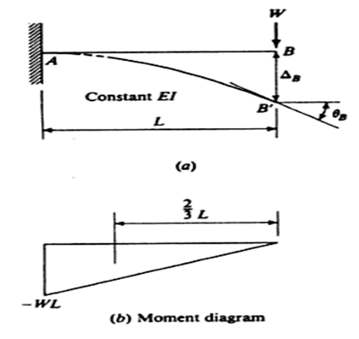
Consider a section x at a distance x from the fixed end A. The BM at this section is given by
Mx = -W(L-x)
But bending moment at any section is given as 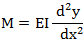
Equating the two values of bending moment we get,
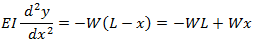
Then integrating above equation,
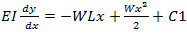 --------------(1)
Integrating again we get
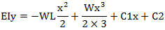 --------------(2)
Where C1 and C2 are the constants of integration, which is obtained from boundary conditions, i.e., i) At x = 0, y = 0 ii) x = 0, dy / dx = 0
- By substituting x = 0, y = 0 0 = 0 + 0 + 0 + C2 C2 = 0
- By substituting x = 0, dy/dx = 0 0 = 0 + 0 + C1 C1 = 0
 Equating the two values of bending moment we get,
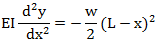
Then integrating above equation,
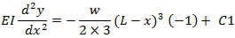
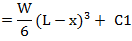 -----------(1)
Integrating again we get
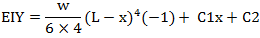
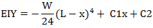 -----------(2)
Where C1 and C2 are the constants of integration, which is obtained from boundary conditions, i.e., i) At x = 0, y = 0 ii) x=0, dy / dx = 0
Equating the two values of bending moment we get,
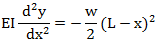
Then integrating above equation,
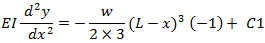
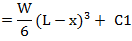 -----------(1)
Integrating again we get
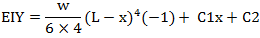
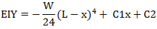 -----------(2)
Where C1 and C2 are the constants of integration, which is obtained from boundary conditions, i.e., i) At x = 0, y = 0 ii) x=0, dy / dx = 0
- By substituting x = 0, y = 0 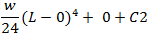 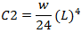
- By substituting x = 0, dy / dx = 0 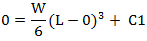 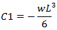

OBJECTIVE: To find the deflection of a cantilever beam under concentrated load at the free end and under uniformly distributed load. STEPS:
- When you click on deflection of cantilever beam, a window will appear as shown below. 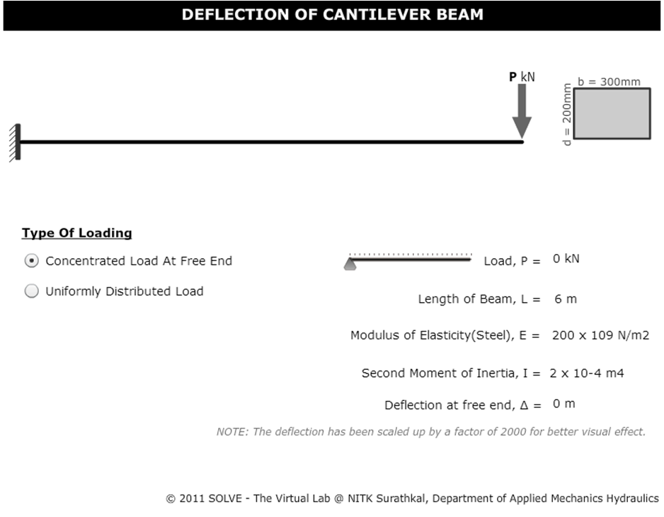
- Here select the required type of loading. 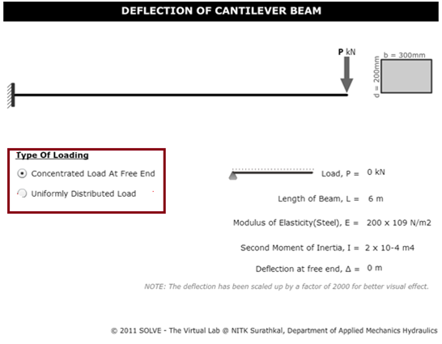
- Then adjust the load by clicking on TRIANGLE button shown inside the square. 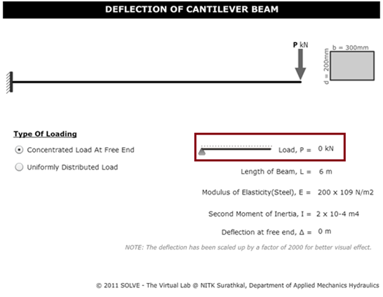
- The final deflection at the free end of a cantilever beam with respect to the applied load will be obtained as below. 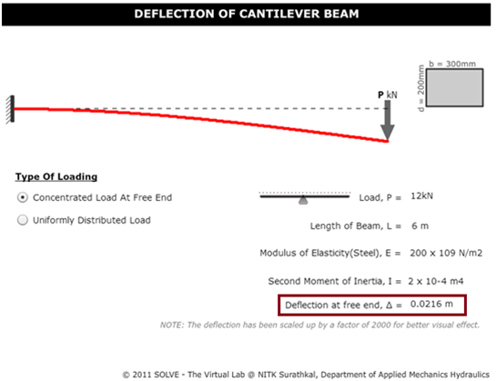


- What is deflection of beam?
- Write the moment diagram for a cantilever beam subjected to a uniformly distributed load?
- Write the formula for deflection of cantilever beam subjected to point load at the free end?
- Write the moment diagram for a cantilever beam subjected to point load at the free end?
- Write the formula for deflection of cantilever beam subjected to uniformly distributed load?

- F.P. Beer and E.R. Johnston, Mechanics of Materials, Tata McGraw – Hill.
- F.L. Singer. Strength of Materials, Harper and Row Publishers.
- Hearns E.J., Mechanics of Materials, Pergaman Press.
- J.L. Marium and L.G. Kraige, Engineering Mechanics – Vol I & II, John Wiley & Sons.
- S.P. Timoshenko and D.H. Young, Engineering Mechanics, McGraw – Hill.
- I.H. Shames, Engineering Mechanics – Statics and Dynamics, Prentice Hall of India.
- S.S. Bhavikatti and K.G. Rajashekarappa, Engineering Mechanics, Wiley Eastern Ltd.
- G.E. Dieter, Mechanical Metallurgy, SI Metric Edition, McGraw – Hill.